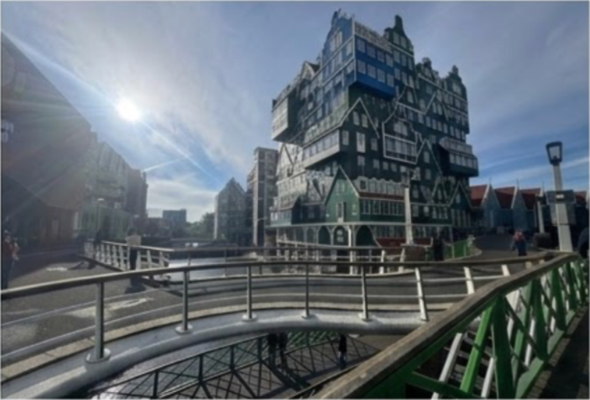
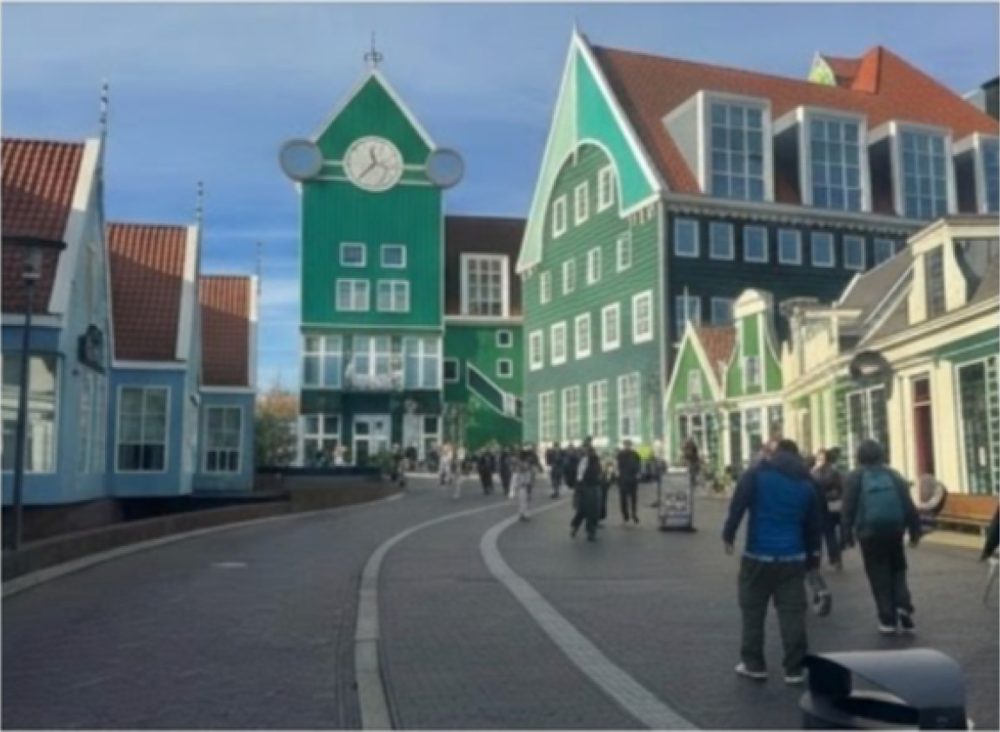

The Stacked Landmark
The famous centerpiece of the Inntel Hotel is nearly seventy stacked traditional green houses. This landmark pays homage to regional heritage while providing an impressive backdrop for couple photography.
Step out of Zaandam Station and walk directly into an architectural wonderland that reinterprets Dutch tradition. Stroll hand-in-hand down Gedempte Gracht, a peaceful shopping promenade built right over the historic canal system.

The famous centerpiece of the Inntel Hotel is nearly seventy stacked traditional green houses. This landmark pays homage to regional heritage while providing an impressive backdrop for couple photography.
The vibrant pedestrian heart of Zaandam, featuring gentle waterways running through the middle, flanked by charming brick walkways, modern retail shops, boutiques and perfect cafe spots.
The early morning offers quiet pavements, while the afternoon light brings out the distinct shades and colorful claddings of the waterside.
